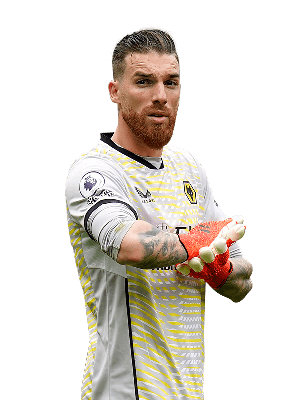

Expected points per gameweek - 4.71
Expected points per million - 0.92
José Sá is our pick for the goalkeeper position, with an expected points of 4.71 he ranks second out of all goalkeepers, only behind Dean Henderson and above the likes of Ederson and Alisson. However, playing with a new manager in Julen Lopetegui that is known for being defensively solid, we expect him to continue to perform and rack up clean sheet points despite being part of a poor Wolves team this season.
Touchline rating 8/10

Expected points per gameweek - 4.13
Expected points per million - 0.92
Timothy Castagne is our pick for the Defender position, with an expected points of 4.13 he ranks fourth out of all defenders, meaning purely on points he is not the best. However, it is his value that makes him such an appealing option. at 4.5m he is 1.4m cheaper than Trippier and 2.9m cheaper than Cancelo is, making him by far the best value defender in the whole of FPL and a must have for any team. Furthermore Leicester City have struck a rich vein of form, that barring an injury, would lead to Castagne becoming an even better option in the near future.
Touchline rating 9/10
Expected points per gameweek - 5.30
Expected points per million - 0.41
Mohamed Salah is our pick for the Midfielder position, with an expected points of 5.30 he ranks first out of all midfielders. This pick may be surprising to any of you that keep up with FPL content creation as everyone seems to laud over De Bruyne and state owning Salah is a waste of money, without noticing Salah is now very close to the same points score as KDB. Granted at 12.8m and with an expected points per million of 0.41 (The same as KDB) his value for money is not great but his pure expected points is extremely high much like De bruyne. But we think Salah is the best option as it gives more freedom to bring in other high scoring Man City players like Cancelo, Foden and Haaland.
Touchline rating 8/10
Expected points per gameweek - 7.70
Expected points per million - 0.64
Erling Haaland is our pick for the Forward position. He has an expected points per match 1.92 higher than anyone else. If you don't own him and captain him when he is fit to play, you will not do well.It is as simple as that.
Touchline rating 10/10
We have already mentioned Dean Henderson, but he definetly deserves more attention, with an expected points of 4.94 he is carrying Nottingham Forest's defence all by himself, he is also the best value goalkeeper at 1.05 points per million.
Gabriel Magalhaes has been imperious for Arsenal this season and while Saliba has been getting all the plaudits, it's actually Gabriel that is the better FPL defender out of the two, generally picking up less yellow cards whilst offering a threat from set-pieces, xp of 4.06 and value of 0.80, if you want an Arsenal defender, Gabriel is the one to get.
Miguel Almirón has surprised everyone with his goal scoring this season, with many calling it good form, however, the stats suggest that it is in fact mostly quality with only a bit part form. The fourth highest xp for midfielders at 4.82 and third for value at 0.77 he definetly warrants a mention as a must have player.
Aleksander Mitrovic has been a revelation for Fulham this season leading them to the top half of the table, and he can be just as valuable for you in FPL, an xp of 5.03 and value of 0.73 make him the fourth best forward and the best value forward, making him a perfect fit for most FPL managers.